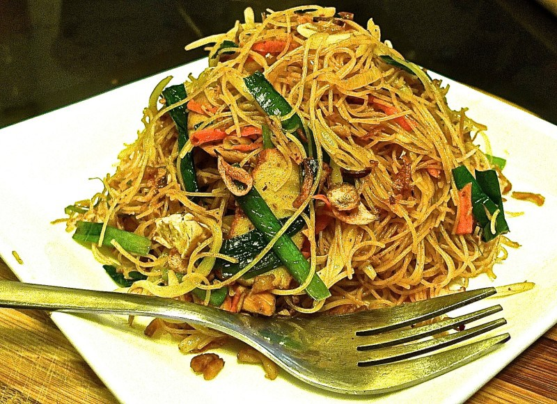

Red Rock Restaurant

Tom Yam Fried Mee Hoon (Tom Yam Fried Rice Vermicelli)
Ingredients
Mee Hoon
Oil
Chopped Garlic Cloves
Shallot
Tauco
Tom Yam Paste
Dried Shrimp
Chicken Fillet
Fish Cake
Tofu
Bean Sprouts
Chives
Carrot
Lime
Lemon grass
Torch Ginger Flower
Sugar
Hot Water
Salt and Pepper
Directions
Heat oil and fry garlic and onions till fragrant.
Add chicken meat and fish cake and fry till just cooked. Dish out and set aside.
Reheat wok on medium heat. Add in some more oil and fry the dried shrimp and stir fry until dried shrimps turns golden brown.
Add the taucho and tom yam paste. Stir fry until aromatic and make sure it doesn’t burn.
Add enough hot water into the paste mixture. Then add sugar and salt to taste.
Add the rice vermicelli. Use a pair of long chopsticks to loosen noodles and make sure its well mixed into the sauce.
Add bean sprouts and carrots. Fry till noodles are cooked and water has almost dried up.
Return the fried chicken and fish cake to the wok.
Lastly add the beancurd strips and chives. Stir briefly to mix well all ingredients.
Taste and adjust seasoning if needed. And we're done!
Garnish with some fried crispy onions and calamansi before serving.
Spoon a serving of the flavourful fried tom yam vermicelli on a plate. Top with more fried onions and dig in!
Food Rating
Not Interested at All
A Little BIt Interested
Looks Good, Really Interested
Highly Interested